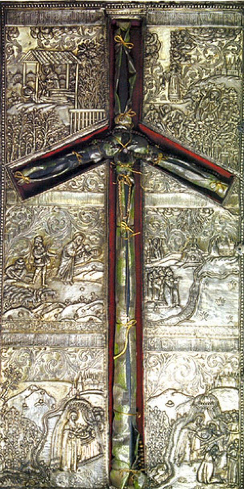

Народилася свята Ніна Грузинська в місті Коластри (Каппадокія) 280 року в багатій та шанованій родині. Батько був військовим на службі у імператора Максиміліана, за легендами він навіть хрестив галлів. Матір її була сестрою єрусалимського патріарха Ювеналія. Саме тому дівчинку виховували в християнській вірі.
Коли Ніні виповнилося 12 років, її батьки переїхали разом з донькою в Єрусалим, де батько пішов жити відлюдником в пустелі (за велінням Ангела Господнього), а матір Сусанна стала дияконисею Гробу Господнього. Доньку ж свою вони віддали на виховання до благочестивої стариці Ніанфоре.
Дівчинка любила багато читати і часто проводила час разом з Ніанфорою, яка розповідала Ніні про життя різних християнських святих. Саме від неї дівчина дізналася про долю хітона Господнього (вбрання, в якому Ісус Христос був розіп’ятий на хресті). Згідно з історією його перенесли в Грузію, де жили люди, які поки ще не були посвячені в християнство.
Ніна мала кровні зв’язки з цією країною. Адже її батько, Завулон, мав там племінника — святого Георгія. Тому, дізнавшись про перебування хітона на землях Іберії, свята Ніна вирішила вирушити в далеку подорож і просвітити місцевих жителів.
Одного разу молода дівчина побачила уві сні Богородицю. Вона подарувала Ніні сплетений з виноградної лози хрест і промовила: “Йди в Іберію і проповідуй Євангеліє. Цей хрест буде тобі щитом від усіх видимих і невидимих ворогів”. Патріарх Ювеналій, дізнавшись про це диво, благословив Ніну на довгу подорож. Проте свята не відразу змогла потрапити в Іберію.
Спочатку їй судилося відвідати Рим. Тут, почувши проповіді святої Ніни, прийняла хрещення цариця Рипсимія, а також інші знатні особи. Імператор Діоклетіан, який хотів одружитися на Рипсимії і ненавидів всіх християн, звелів переслідувати колишню наречену разом з Ніною. Але дівчата змогли втекти до Вірменії. Тоді імператор попросив свого друга, вірменського царя Тірідата, продовжувати переслідування на його землях. Лише свята Ніна змогла дивом вціліти. Вона дійшла до Джавахетських гір в одних лахміттях.
315 року Ніна дійшла до Мцхету. Того дня в місті якраз святкували язичницьке свято. Ніна почала голосно молитися, що викликало справжню бурю: піднявся сильний вітер, який повністю зруйнував ідола. Притулок дівчині надав царський садівник. Саме тут Ніна почала свої проповіді. Пізніше вона познайомилася з равином Авіафаром, який допоміг їй в просвітленні Грузії.
Молитви Ніни творили чудеса, а слава про неї швидко розлетілася країною. Одного разу вона навіть зцілила від страшної хвороби царицю Нану, але цар вирішив, що дівчина чаклунка і почав жорстоко переслідувати християн. Через 3 роки сам цар ледве не осліпнув. Але Ніна допомогла йому і вилікувала від сліпоти. Тоді він дав обітницю, що освітить справжньою вірою свою країну.
Цар обіцянку виконав і охрестив народ. Тоді Ніна надіслала імператору Констянтину листа, в якому прохала прислати на ці землі єпископа Іоанна. Тоді ж почали будувати перший храм, який виріс на березі річок Арагві та Кури. Святій Ніні відкрилося уві сні, що саму на цьому місці в старому кедрі схований хітон Господній.
Свята Ніна продовжувала проповідувати серед гірського народу. Цій справі вона присвятила 35 років життя. Лише до віддалених районів на південному сході не змогла дістатися жінка. Коли Ніна стала літньою і немічною, почала вести сподвижницьке життя в невеликому курені поблизу міста Бодбе. Тут вона і померла. Сталося це 27 січня 340 року.